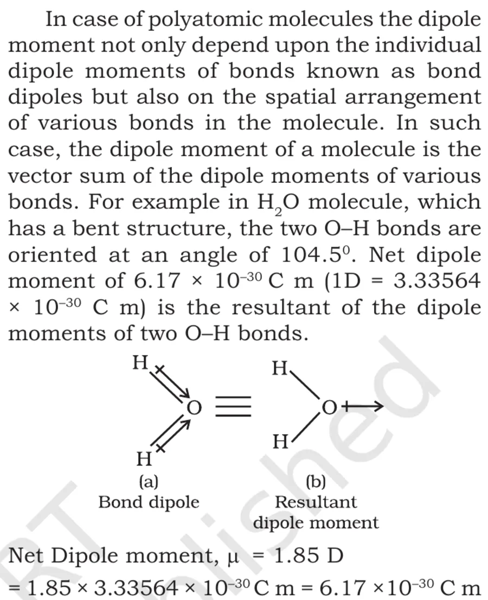
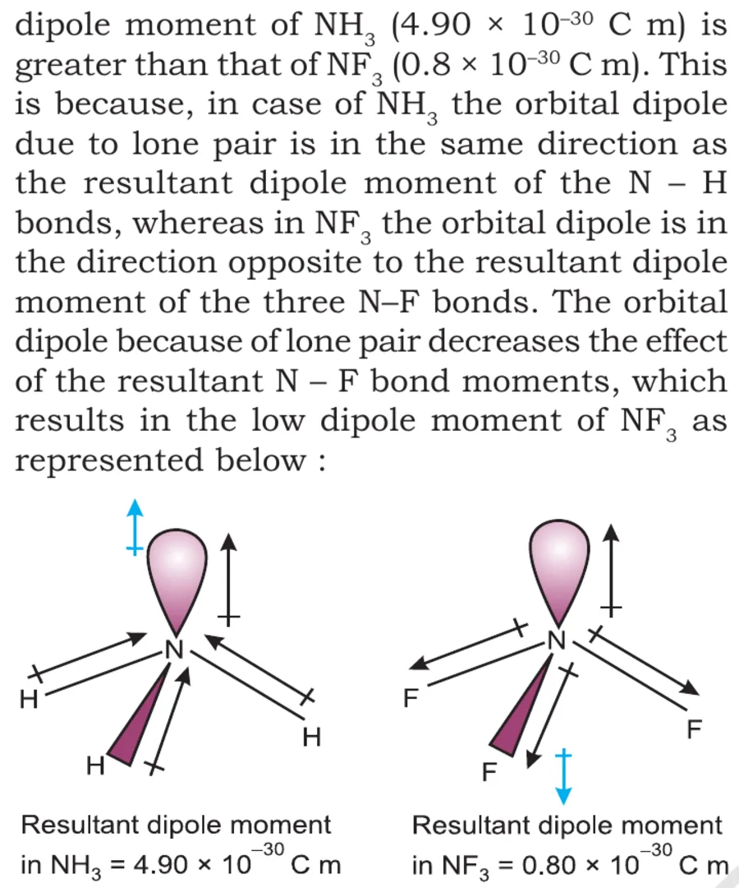

Why this project
A rule from school chemistry made this look trivial. It isn't, and that is what made it worth studying.
In Class 11 chemistry, the dipole moment of a molecule is the vector sum of its bond dipoles: add up each polar bond, taking the angles into account. Water's two O–H bonds at 104.5° give 1.85 D.
Looking for an ML problem, we found dipole prediction on QM9. With a rule like that, we expected a quick win: sum the bonds and you are done.

Try it: add up the bond dipoles
Pick a molecule and change the bond angle. The rule is just geometry: see when the bonds cancel and when they do not.

A molecule's dipole comes from its whole electron cloud: lone pairs, resonance and charge shifting between neighbouring atoms all change each “bond dipole”. We applied the textbook rule to every test molecule, with the true 3D geometry and the best possible scale factor:
Average error on the same held-out molecules. The rule explains almost none of the variation (R² ≈ 0).
The accurate answer needs a quantum-chemistry (DFT) calculation, whose cost grows steeply with molecule size: roughly the cube to fourth power of the number of electrons. That is fine for one molecule but expensive across the millions considered in a screening study. A model that predicts the dipole in milliseconds can filter candidates first, so the expensive calculation is spent only on the promising ones.
Polarity shapes solubility and how easily a molecule crosses cell membranes.
Dipole moment governs how well a solvent dissolves salts and polar compounds.
Molecular dipoles affect how organic electronic and dielectric materials pack and respond to fields.
How the textbook-rule number was computed
For each molecule we summed, over every bond, the Pauling electronegativity difference times the bond vector from the DFT-optimised
3D coordinates (our phys_bond_dipole feature). The result has arbitrary units, so we gave the rule its best chance:
one scale factor (1.34), fitted by least squares on the training molecules only. On the main random test split it reaches
MAE 1.18 D, median error 1.00 D, and only 25% of molecules within 0.5 D, against 78% for our best model.
The rule is not useless: the same vector sum is one of our input features, and the model learns to correct it using everything else it knows about the molecule (see the ablation).
The question
Can the DFT dipole moment μ be predicted from structure, so the expensive property calculation can be skipped when screening molecules?
Scope, inputs and limits of the claim
What the models may use
- Structure-only models use the bond graph (which atoms, which bonds), known before any quantum calculation.
- Geometry models also use 3D coordinates. In QM9 these are DFT-optimised, so the honest claim is “skip the property calculation given a good geometry”, not “skip DFT”.
- All other DFT outputs (energies, HOMO/LUMO, polarisability, charges, frequencies) are excluded: they come from the same calculation as the target.
Limits of the claim
Labels are DFT (B3LYP/6-31G(2df,p)) dipoles of QM9-like molecules, in the gas phase at a single optimised geometry. Results say nothing about experimental dipoles, drug-sized molecules, or solvated or flexible conformers, and a good prediction does not explain why a molecule is polar.
Data
QM9: 134k small organic molecules (up to 9 heavy atoms), each with a DFT-computed dipole moment.
Distribution of μ (log-scale counts). Most molecules sit between 1 and 5 D. Symmetric molecules cluster near 0 D, and a long tail of charge-separated zwitterions reaches 30 D.
Source, access and data-quality checks
- QM9 (Ramakrishnan et al., Scientific Data 2014); molecules enumerated from GDB-17 (Ruddigkeit et al. 2012).
- We use the MoleculeNet / DeepChem copy (
qm9.zip:gdb9.sdfwith 3D structures +gdb9.sdf.csvwith properties). It is public and free with citation; its SHA-256 is in the repo. - The Kaggle “Molecular Property Prediction Challenge” uses a 20k-molecule subset with hidden test labels, so we built our own splits from the full labelled set.
- Target μ: mean D, median D, right-skewed (skew ).
| Check | Finding | Decision |
|---|---|---|
| Structures RDKit cannot parse | molecules (1.4%) fail valence sanitisation; their mean μ is D vs D for the rest | Excluded (features cannot be computed). A small
selection effect, listed in results/rdkit_failed_molecules.csv. |
| Missing labels / missing or infinite feature values | None found | An imputer is still kept inside the pipeline as a guard. |
| Same 2D graph appearing more than once | molecules share their bond graph with another (stereo-isomers / conformers); within a graph μ differs by up to D | Kept, but each graph sits on one side of every split, so no test graph is seen in training. These set a floor on 2D-only error. |
| Extreme values | molecules above 10 D, almost all zwitterions such as
[NH3+]CCCCCC(=O)[O-] (29.6 D) | Kept: real chemistry, not errors. Dropping them would make the test look easier. |
| Near-zero dipoles | molecules below 0.1 D ( exactly 0, e.g. methane) | Kept, and analysed as an error group. |
| QM9's list of ~3k molecules that failed a geometry-consistency check | Could not be downloaded (figshare blocked automated access) | Not applied; noted as a limitation. |
Method
Five feature groups, two baselines and eight models, all tuned on training data only and tested once.
Atom counts (H, C, N, O, F, heavy, total).
RDKit graph descriptors and 85 functional-group counts.
Gasteiger partial charges: computed from the graph, no quantum calculation.
Coulomb-matrix eigenvalues and shape moments; invariant to rotation and atom order.
|Σ qi ri| from charges × positions, and an electronegativity bond-dipole sum.
Structure only = composition + 2D + charges. Full = all five groups.
Preprocessing details
- Each SDF block is parsed with RDKit into one row. Only
mol_idandmuare read from the property table. - Learned preprocessing (median imputation → removal of constant columns → standardisation) is a scikit-learn
Pipeline, re-fitted on training folds only, so no statistic of a test molecule leaks into the model. 22 descriptor columns (e.g. sulfur groups) are constant in QM9 and are dropped this way. - Scaling is applied for distance- or penalty-based models (Ridge, Lasso, k-NN, SVR, MLP), not for trees.
- Target kept on its original scale (no log transform): the metric is error in Debye, and the zwitterion tail is real.
- A dipole is a charge-weighted sum of positions, so the dipole-estimate features are a crude physical approximation that the model can correct.
From linear to highly flexible. We deliberately did not use graph neural networks: the questions here can be answered with methods we can fully explain.
What each model does and why it is here
| Model | Core idea | Assumes | Why it is here |
|---|---|---|---|
| Mean baseline | predict the training mean for every molecule | none | Every model must beat this. R² is measured against it. |
| Linear reg. on atom counts | least squares on 7 composition counts | μ additive in atom types | “Is it just which atoms are present?” |
| Ridge / Lasso | least squares + L2 / L1 penalty (α tuned) | linear in features | How far a linear model on rich features gets; Lasso checks whether a sparse subset suffices. |
| k-NN | distance-weighted average of the k nearest training molecules | similar descriptors → similar μ | Non-parametric similarity baseline. |
| Decision tree | greedy axis-aligned splits (depth, leaf size tuned) | piecewise-constant μ | Captures interactions; interpretable but high variance. |
| Random forest | average of 200 bootstrap trees with random feature subsets | as tree | Bagging lowers tree variance. |
| Gradient boosting | trees added sequentially to fit residuals (histogram GBM, early stopping) | additive in trees | Usually strongest on tabular data. |
| SVR (RBF kernel) | ε-insensitive loss + margin; smooth non-linear kernel fit | smooth μ | Margin-based; trained on 20k molecules because kernel cost grows ~n². |
| MLP | 2 hidden layers (256, 128), ReLU, Adam, early stopping | smooth non-linear map | Does a generic neural net help on these descriptors? |
- Split80 / 20, grouped by 2D graph
- Tune5-fold CV on 15k training molecules
- Refiton the full training split
- Test onceon held-out molecules
Full protocol and stress-test design
- Seed 0 for every model, plus seeds 1 and 2 for the baselines, Ridge, the tree and gradient boosting.
- RMSE penalises large misses, so the RMSE–MAE gap shows how heavy the error tail is. R² is relative to the mean baseline.
- Paired bootstrap on the same test molecules compares two models.
| Split | Train → test | What it asks | Fair comparison |
|---|---|---|---|
| Scaffold | whole Bemis–Murcko ring scaffolds held out ( test molecules, all with rings) | Does it generalise to ring systems never seen? In the random split, 80% of test molecules share a scaffold with training. | Random split scored on ring-containing test molecules only |
| Size | train on ≤ 8 heavy atoms (22,035) → test on 9-heavy-atom molecules (21,987) | Can it extrapolate to larger molecules? | Same test pool, trained on a random 22,035 molecules |
Each stress test is tuned inside its own training set. The matched controls matter: the scaffold test set has no acyclic molecules and the size split trains on 5× less data.
Results
Every learned model beats both baselines, and the features matter far more than the choice of model.
Adding geometry moves MAE by ~0.2 D; switching among the top three models moves it by ~0.02 D.
Ridge and Lasso stall even with all features: the dipole is a non-linear function.
SD of the best MAE across three random splits. Bootstrap CI ≈ ±0.005 D.
Seed-0 test error on the main random split, with 95% bootstrap CI (MAE).
Full results table
Discussion: baselines, underfitting, uncertainty
Every learned model beats both baselines by a wide margin. Predicting the mean gives MAE 1.19 D. Knowing only which atoms are present (linear regression on atom counts) improves this just to 1.01 D (R² 0.23). Polarity depends on how atoms are connected and arranged, not only on which atoms are present.
The feature set matters more than the choice of model. With structure-only features the best models reach about 0.54 D. Adding geometry lowers the MAE of every model: about 23% for Ridge/Lasso, 31–38% for the tree, SVR, MLP and ensembles, but only 6% for k-NN, whose Euclidean distance over ~250 standardised features is dominated by the ~190 2D descriptors. With full features the three strongest models are close: gradient boosting 0.341 D (R² 0.88), MLP 0.356 D, random forest 0.363 D.
Linear models underfit. Ridge and Lasso stay near 0.57 D even with all features, and CV picked the weakest penalty in each grid. With ~100k molecules and ~250 features they are limited by bias, not variance, so regularisation barely matters and sparsity brings nothing. The dipole (the norm of a vector sum) is non-linear in the features.
How certain are these numbers? Across three random splits the best model's MAE varies by ± 0.001 D (sd), and the 95% bootstrap interval is about ± 0.005 D. So the large effects are clearly real: geometry vs structure-only (−0.200 D, CI [−0.206, −0.195]) and best model vs the atom-count baseline (−0.66 D). Gradient boosting also beats the random forest (−0.022 D) and the MLP (−0.015 D) by more than test-set noise, but those two ran on one seed with small tuning grids, so “gradient boosting is best” is a weaker claim than “geometry features help a lot”.
Why is the CV error higher than the test error? Tuning CV fits on 12k molecules; final models are refit on 105k. The learning curve shows error still falling with more data, so CV scores were used only to rank settings.
What part of the geometry helps?
Two physics features, dipole estimates from charges × positions, carry almost all of the geometry benefit.
Test MAE as feature groups are added.
MAE increase when a group is shuffled (best model).
Read the ablation in detail
Adding the 35 generic geometry descriptors (Coulomb eigenvalues and shape) to the 2D features helps only a little: gradient boosting goes from 0.542 to 0.513 D, Ridge from 0.748 to 0.743 D. Adding just the two dipole estimates instead brings gradient boosting to 0.345 D, almost exactly the 0.341 D of the full set; Ridge moves from 0.748 to 0.576 D.
The permutation test agrees: shuffling just these two columns raises the full model's MAE by 0.66 D, almost as much as shuffling all 208 2D descriptors together (0.83 D), while the 35 Coulomb/shape columns cost only 0.07 D. The 2D descriptors still say which polar groups are present; the dipole estimates say how those groups add up in 3D.
The point is how 3D information is encoded. Generic invariant descriptors throw away directions; a dipole is a vector sum, so a feature built the same way gives the model most of the answer, and the model learns to correct its errors. This matches an earlier Kaggle-based study, where Coulomb-matrix eigenvalues alone gave a weak dipole model (MAE ≈ 0.8 D on 20k molecules).
Learning curve
Good features are worth far more data: with geometry, 1,000 molecules match a structure-only model trained on 50,000.
Gradient boosting on growing training subsets. Solid = test error, dotted = training error.
Details and paired significance tests
With geometry, 1,000 training molecules give MAE 0.59 D, about the 0.57 D of the structure-only model at 50,000. Both curves are still falling at full size (full features: 0.368 D at 50k → 0.342 D at 105k), so more data would still help a little. Training error is not monotone because early stopping picks a different number of trees at each size.
Is the difference real? Paired bootstrap on the same test molecules
The bootstrap shows whether a gap exceeds test-set noise for this split and these fitted models, not whether it would hold for other molecule families. The 3-seed spread and the stress tests address that.
Explore the predictions
Each point is a held-out test molecule ( sampled + the 15 worst). Click one to open it in 3D.
Molecule viewer
Click a point in the scatter plot, or a molecule in the guided tour.
What the arrow shows, and things to try
The arrow is the model's physics feature, Σ qiri with Gasteiger charges, not the DFT answer: QM9 gives only the dipole's magnitude, not its direction. Arrow length is proportional to the estimate.
- Switch between Structure only and + Geometry and watch the cloud tighten around the diagonal.
- Set μ from 0 to 0.5 to see symmetric molecules over-predicted.
- Set μ from 8 upward to see zwitterions under-predicted.
Where the model goes wrong
Typical error is small, but the tail is heavy, and predictions are pulled toward the mean.
Median error 0.21 D; 94% of molecules are within 1 D.
Above 7 D under-predicted; below 1 D over-predicted by +0.2–0.3 D.
Zwitterions and charge-separated molecules dominate the largest errors.
MAE by true-μ range for three models; the line is the mean residual (prediction − truth) of the best model.
Why predictions shrink toward the mean
RMSE (0.53 D) is well above MAE (0.34 D) because a few molecules are missed by several Debye. The residual is negatively correlated with the true dipole (r = −0.40). Two reasons: squared-error tree ensembles average over leaves, which shrinks rare extremes toward the dense middle; and a near-zero dipole needs bond dipoles to cancel exactly, so any small error in their directions adds up to a non-zero prediction. (|μ| can never be negative, so errors near zero are one-sided.)
Geometry helps in every range, most where the answer depends on spatial arrangement: MAE falls from 0.73 to 0.39 D for 0.5–1 D molecules (partial cancellation) and from 1.10 to 0.56 D for 5–7 D molecules (aligned polar groups).
Error by chemical group
The 15 worst predictions
13 of these 15 carry formal charges ([NH3+], [NH2+], [O-], [CH+]). Their dipole is
dominated by two full opposite charges a few Ångström apart; one elementary charge across 1 Å is already 4.8 D, so a small
error in where the charge sits becomes several Debye. The charge × position estimate is unreliable both ways for them (below
the truth for 10, but 18.6 D for one molecule whose true dipole is 2.7 D), and charged molecules are rare in training.
The two uncharged ones (gdb_129996, gdb_129994) are fused bicyclics with several ring nitrogens, a rare motif.
Outside this table, the hardest group is molecules whose 2D graph occurs more than once (0.72 D).
Most promising fix: features that describe charge separation directly (e.g. the distance between formally charged atoms), or a better cheap charge model.
Robustness
On new ring scaffolds and larger molecules, flexible models lose a little; a linear model can fail badly.
Gradient boosting 0.334 → 0.393 D vs its fair control. Ranking unchanged.
Trained on ≤ 8 heavy atoms, tested on 9: trees extrapolate gracefully.
From 0.58 D: one feature leaves its training range and shifts every prediction.
Test MAE on each split. Fair comparisons: scaffold vs random (ring-only), and train ≤ 8 → 9 vs size control. More models are in the legend: click to show them.
Full robustness table
Why the linear model fails on larger molecules
Scaffolds. Holding out whole ring scaffolds raises the MAE of gradient boosting by 18%, the random forest by 17% and the tree by 14%, but Ridge by only 3%: flexible models partly rely on patterns specific to scaffolds they have seen. On unseen scaffolds gradient boosting with geometry (0.39 D) still beats Ridge (0.57 D) and any structure-only model (≥ 0.60 D), so the random-split numbers are optimistic by about a sixth, but the conclusions hold.
Size. Gradient boosting reaches 0.450 D vs 0.420 D for a size-matched random control (random forest +4%, tree +6%, structure-only models +1–2%). Ridge with full features jumps from 0.58 to 1.92 D, over-predicting every 9-atom molecule by +1.8 D. The cause is one feature: the 9th-largest Coulomb-matrix eigenvalue comes from a hydrogen in any molecule with ≤ 8 heavy atoms, but from a heavy atom in a 9-atom molecule, so 99.8% of test molecules fall outside the training range. A linear model multiplies that value by its coefficient; a tree only asks “above the last threshold?”, so it stays within the training targets. Interpolation is safe; extrapolation is not.
Conclusion
Within QM9's scope, yes: the DFT dipole can be predicted from structure, to about a third of a Debye.
What this does not show
That the models work for experimental dipoles, larger molecules or cheaper (non-DFT) geometries. Feature importance shows what the models use, not what makes molecules polar.
Next steps
- Use force-field geometries to test the realistic “skip all of DFT” claim.
- Add charge-separation features to target the worst failures.
- Predict the dipole vector, avoiding one-sided errors near zero.
Limitations
B3LYP dipoles have their own error vs experiment; our accuracy is bounded by it.
Features use DFT-optimised coordinates; cheaper geometries were not tested, so these numbers are an upper bound.
Molecules sharing a 2D graph differ by up to D, which no 2D model can resolve.
Only H, C, N, O, F and ≤ 9 heavy atoms; extrapolation tested by just one atom.
1.4% unparseable molecules dropped; QM9's list of ~3k inconsistent geometries not applied.
Tuning on a 15k subsample; SVR on 20k; five models on one seed only.
More on limitations
- A feature quirk.
comp_nheavycounts atoms left after RDKit'sRemoveHs, which keeps a few stereo-relevant hydrogens; it overcounts for 1.2% of molecules. The size split and every analysis use the true heavy-atom count. - Seeds. k-NN, SVR, Lasso, the MLP and the random forest ran on one seed (Ridge, the tree, gradient boosting and the baselines on three), so the ranking among top non-linear models is less certain than the large gaps.
- No causal claim. Feature importance shows what the model uses to predict, not what makes a molecule polar.
Reproduce
Every number on this page comes from the scripts in the repository.
git clone https://github.com/RandomArtist22/qm9-dipole-prediction && cd qm9-dipole-prediction
python3.12 -m venv .venv && . .venv/bin/activate && pip install -r requirements.txt
mkdir -p data/raw && cd data/raw # data: 44.8 MB, public MoleculeNet copy of QM9
curl -LO https://deepchemdata.s3-us-west-1.amazonaws.com/datasets/molnet_publish/qm9.zip
sha256sum -c SHA256SUMS && unzip qm9.zip && cd ../../src
python build_dataset.py # features + data_quality.json (~2 min)
python make_splits.py # all splits, saved before any model (seconds)
bash run_all.sh # tuning + test evaluation (~1.5 h on 28 cores)
python extra_experiments.py # learning curve, permutation importance
python analyze.py # tables, CIs, figures, site data
python export_3d.py # 3D structures for the viewerOutputs, team, AI use and citations
- Exact splits:
data/splits/splits.csv.gz(seeds insrc/config.py). - Hyper-parameters, CV tables and test scores:
results/metrics.csv; test predictions inresults/predictions/. - Notebooks:
notebooks/01_data_exploration.ipynb,notebooks/02_results_walkthrough.ipynb.
Team: P Sai Ramcharan Reddy (25110220) and Vasu Garg (25110342).
AI use: Claude Code (Anthropic) was used to help write and debug code, run experiments, and draft the website and README text.
Citations: NCERT, Chemistry Part I, Textbook for Class XI, Unit 4 “Chemical Bonding and Molecular Structure”, pp. 111–112 (excerpts shown for educational purposes) · Ramakrishnan, Dral, Rupp, von Lilienfeld, Quantum chemistry structures and properties of 134 kilo molecules, Sci. Data 1, 140022 (2014) · Ruddigkeit et al., Enumeration of 166 billion organic small molecules in the chemical universe database GDB-17, J. Chem. Inf. Model. 52, 2864 (2012) · Wu et al., MoleculeNet, Chem. Sci. 9, 513 (2018) · Rupp et al., Coulomb matrix, PRL 108, 058301 (2012) · Gasteiger & Marsili, Tetrahedron 36, 3219 (1980) · Bemis & Murcko, J. Med. Chem. 39, 2887 (1996) · scikit-learn (Pedregosa et al., JMLR 2011) · RDKit · Plotly.js · SmilesDrawer (Probst & Reymond 2018) · 3Dmol.js (Rego & Koes 2015) · an earlier Kaggle-based study, jilsnshah/molecular_prediction_challange, used for comparison only (no code reused).